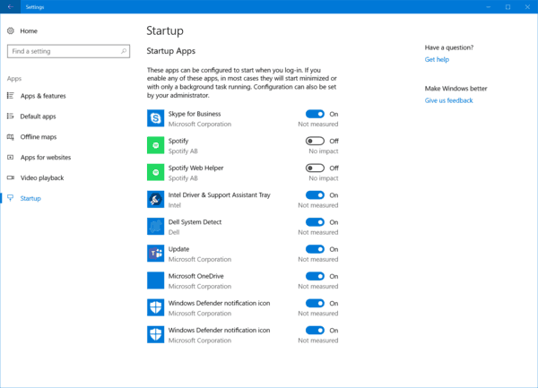
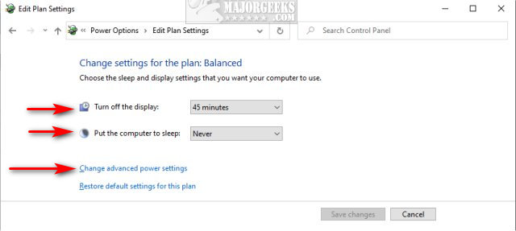
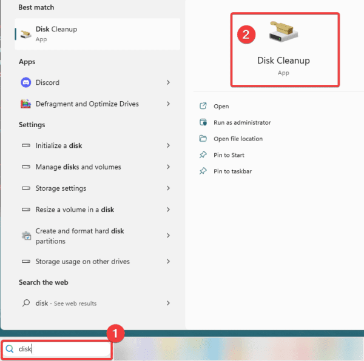
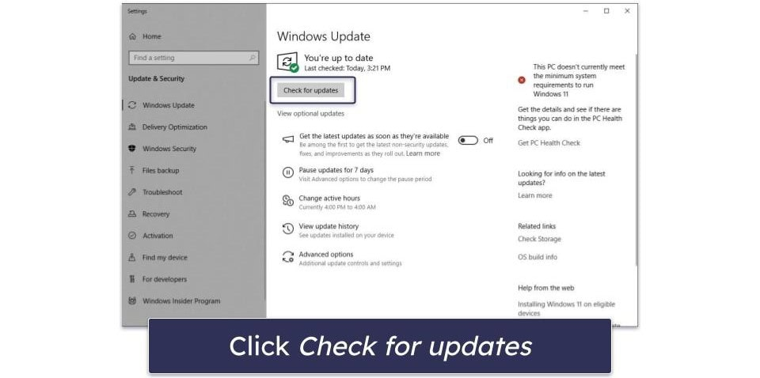
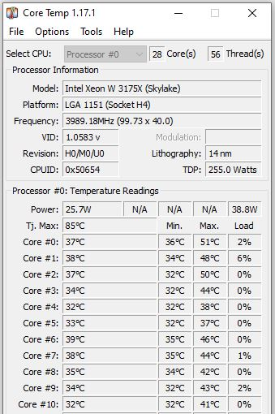

Performance Optimization
Speed up your PC and improve hardware efficiency.
-
1. Manage Startup Applications
Disable unnecessary apps that launch when Windows starts. Press Ctrl + Shift + Esc, go to the Startup tab, and disable high-impact apps.

-
2. Adjust Power Settings
Ensure your PC is not in "Power Saver" mode. Go to Control Panel > Hardware and Sound > Power Options and select High Performance.

-
3. Optimize Storage with Disk Cleanup
Remove temporary files that slow down your system. Search for "Disk Cleanup" in the Start menu and delete system cache files.

-
4. Check for Driver and OS Updates
Outdated drivers can cause system lag. Go to Settings > Windows Update to ensure your hardware drivers are current.

-
5. Monitor Hardware Temperatures
Overheating causes thermal throttling. Ensure your fans are clean and air vents are not blocked to maintain peak speed.
